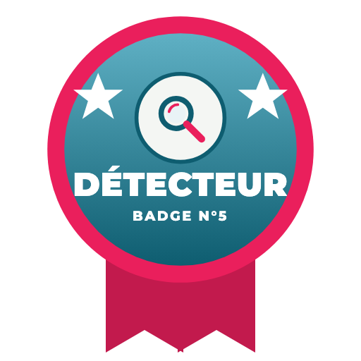
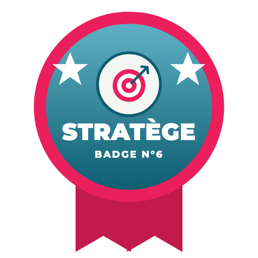
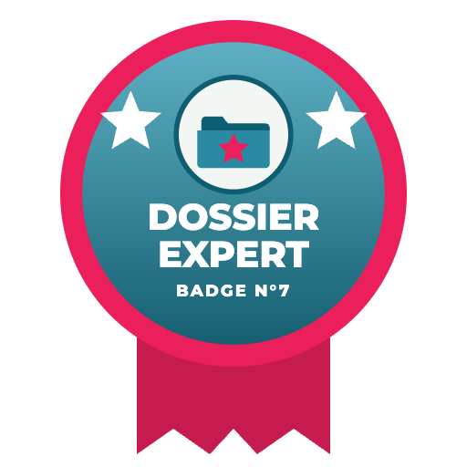
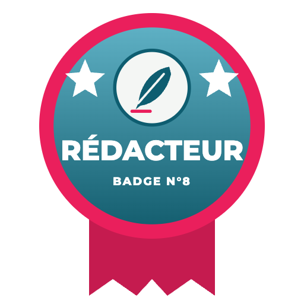
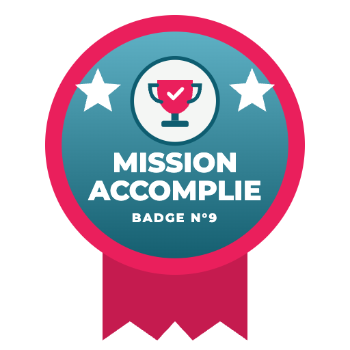

SAC À DOS
🧭
Carnet de route
🎖️
Badge Explorateur
🕵️
Chasseur de mythes
🔑
Décrypteur Parcoursup

Détecteur

Stratège

Dossier Expert

Rédacteur

Mission accomplie
… et il reste de la place pour la suite de l’aventure !